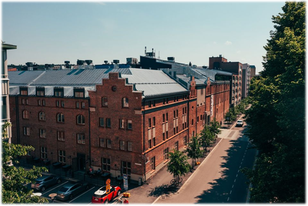

Lahden visuaalisten taiteiden museo Malva
Olimme mukana toteuttamassa yhtä Lahden kulttuurihankkeista vuosina 2019–2021, kun Lahden Mallasjuoman vanha panimorakennus saneerattiin upeaksi visuaalisten taiteiden museo Malvaksi.
Historiallisen kohteen herättäminen henkiin modernina elämyskeskuksena vaati sähkö- ja telejärjestelmiltä äärimmäistä joustavuutta ja huomaamattomuutta. Toteutimme kohteeseen nykyaikaiset ja luotettavat sähköistykset, jotka palvelevat niin alueen yrityksiä kuin kansainvälisen tason museotekniikkaakin – historiaa kunnioittaen.